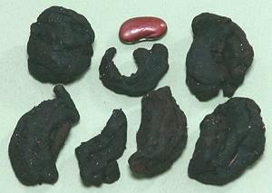

Kokum is a purple fruit used as a souring agent, usually in dried form, though a soft salt preserved form is common in India. It is common along the western coast of India where the tree is native, and takes the place tamarind fills elsewhere. It is used in other regions as well, particularly Sri Lanka and Malaysia where it is used in fish curries and is said to slow spoilage.
In general, whole pieces of the dried fruit rind are added to curries and similar dishes. It is also used, often in syrup form, to flavor summer beverages. The photo specimens, obtained from an Indian market in Los Angeles, were up to 1-1/8 inches in diameter. Photo © cg1.
Oil extracted from the seeds remains solid at room temperature and is called Kokum Butter. It is used for confectionery, cosmetics, medicinals and as a moisturizer for dry and cracked skin. Various parts of the fruit and plant are used medicinally.
More on Mangosteens.
Native to Indonesia but now grown in other regions, this fruit, when mature, is orange or yellow with sutures, resembling a miniature pumpkin, though shape may vary. The thick rind is used as a souring agent in curries, particularly in Kerala, the far southwest coast of India, and in Sri Lanka. Like Kokum, it is sold in both hard dried form and soft salt preserved form, though only the dried form is likely available in North America. It is more citrusy than Kokum. It is also used, especially by the Kodava (Coorg) people, to make a strong dark vinegar called Kaachambuli. Recipes calling for Gummi-Gutta may ask for "a few petals". The dried fruit splits along the sutures into these "petals".
Gummi-gutta is also now grown in south and central Africa. In the West it was recently strongly hyped as a weight loss aid by famous TV snake oil salesman Dr. Oz. Formal studies have shown it less effective than a placebo - no weight loss and some risk of liver toxicity, but I'm sure it's been profitable for Dr. Oz. Photo by Lalsinbox distributed under license Creative Commons Attribution-ShareAlike 3.0 Unported.
Tamarind, is the other suggested substitute, which is considered by Sri Lankans to be too sour for fish (Gambooge is sometimes called "Fish Tamarind"). Actually the two are very different. Tamarind has a pleasant date-like flavor, while Gambooge is much stronger, with a somewhat acrid flavor. To equal the volume and strength of the Gambooge, you'd need to cut about 2 times the weight off a block of Tamarind as the weight of Gambooge called for, and process it into paste. It will be a lot lighter in color and a bit more sour.
More on Mangosteens.